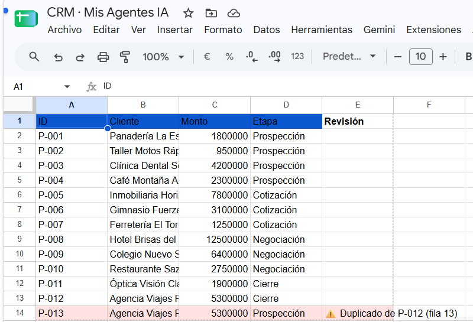

GOOGLE SHEETS + GOOGLE APPS SCRIPT · CALIDAD DE DATOS · PROYECTO PROPIO
Detector de duplicados en un CRM
En los CRM que se llevan en una hoja de cálculo, el mismo cliente termina registrado dos veces y el embudo de ventas se infla. Un menú propio en la hoja encuentra los repetidos, aunque cambien tildes, espacios o mayúsculas, los marca sin borrarlos y calcula cuánto dinero sobra en el embudo.

RESULTADO
$5.300.000
inflaban el embudo: «Agencia Viajes Rumbo» estaba registrada en Cierre y otra vez en Prospección.
El script no borra nada. Decidir cuál registro conservar es una decisión de negocio, y todo se deshace con un clic.
CÓMO FUNCIONA
Cuatro pasos, un solo clic
- PASO 1 · TÚ DECIDES«Detectar duplicados»
Desde el menú «🔍 Calidad de datos» de la propia hoja.
- PASO 2Normaliza los nombres
Sin tildes, espacios extra ni mayúsculas, para comparar de verdad.
- PASO 3Marca los repetidos
Pinta la fila y escribe en «Revisión» a qué registro duplica.
- PASO 4 · EN SEGUNDOSAvisa el impacto
Una alerta con cuántos duplicados hay y cuánto inflan el embudo.
CÓMO ESTÁ HECHO
Las piezas
| Pieza | Qué hace |
|---|---|
| Normalización | normalize('NFD') y expresiones regulares quitan tildes y espacios, para que «Agencia Viájes Rumbo » y «agencia viajes rumbo» sean el mismo cliente. |
| Diccionario de vistos | Guarda la primera aparición de cada cliente; la segunda se marca como duplicado de la primera. |
| Escritura en la hoja | setBackground y setValue marcan la fila y agregan la columna «Revisión». |
SpreadsheetApp.flush() | Aplica los cambios antes de la alerta, para que lo que se ve coincida con lo que hizo el script. |
| Deshacer | «Limpiar marcas» quita la columna y los colores y deja el CRM como estaba. |
El código completo
/**
* Detector de duplicados en un CRM · Google Apps Script
*
* Hoja esperada (fila 1 = encabezados): ID | Cliente | Monto | Etapa
* Uso: abre el Sheet → menú «🔍 Calidad de datos» → «Detectar duplicados».
* No borra nada: marca las filas repetidas y dice cuánto inflan el embudo.
*/
function onOpen() {
SpreadsheetApp.getUi()
.createMenu('🔍 Calidad de datos')
.addItem('Detectar duplicados', 'detectarDuplicados')
.addItem('Limpiar marcas', 'limpiarMarcas')
.addToUi();
}
// Normaliza el nombre: sin tildes, sin espacios extra, en minúsculas
function normalizar(texto) {
return String(texto).normalize('NFD').replace(/[̀-ͯ]/g, '')
.trim().replace(/\s+/g, ' ').toLowerCase();
}
function detectarDuplicados() {
const hoja = SpreadsheetApp.getActiveSheet();
limpiarMarcas();
const datos = hoja.getDataRange().getValues();
const colRevision = datos[0].length + 1; // columna nueva al final
hoja.getRange(1, colRevision).setValue('Revisión').setFontWeight('bold');
const vistos = {}; // cliente normalizado → primera fila donde apareció
let duplicados = 0, montoInflado = 0;
for (let i = 1; i < datos.length; i++) {
const [id, cliente, monto] = datos[i];
if (!cliente) continue;
const clave = normalizar(cliente);
const fila = i + 1; // filas de la hoja empiezan en 1
if (vistos[clave]) {
duplicados++;
montoInflado += Number(monto);
hoja.getRange(fila, 1, 1, colRevision).setBackground('#FDE2E1');
hoja.getRange(fila, colRevision).setValue(`⚠️ Duplicado de ${vistos[clave].id} (fila ${vistos[clave].fila})`);
} else {
vistos[clave] = { id, fila };
}
}
SpreadsheetApp.flush(); // escribe los cambios en la hoja antes de mostrar la alerta
const fmt = n => '$' + n.toLocaleString('es-CO');
const texto = duplicados === 1 ? 'Se encontró 1 duplicado' : `Se encontraron ${duplicados} duplicados`;
SpreadsheetApp.getUi().alert(duplicados
? `${texto}.\nEl embudo está inflado en ${fmt(montoInflado)}.`
: '✅ No hay clientes duplicados.');
}
function limpiarMarcas() {
const hoja = SpreadsheetApp.getActiveSheet();
const encabezados = hoja.getRange(1, 1, 1, hoja.getLastColumn()).getValues()[0];
const col = encabezados.indexOf('Revisión') + 1;
if (col > 0) hoja.deleteColumn(col);
hoja.getDataRange().setBackground(null);
hoja.getRange(1, 1, 1, hoja.getLastColumn()).setBackground('#0b57d0'); // conserva el color del encabezado
}